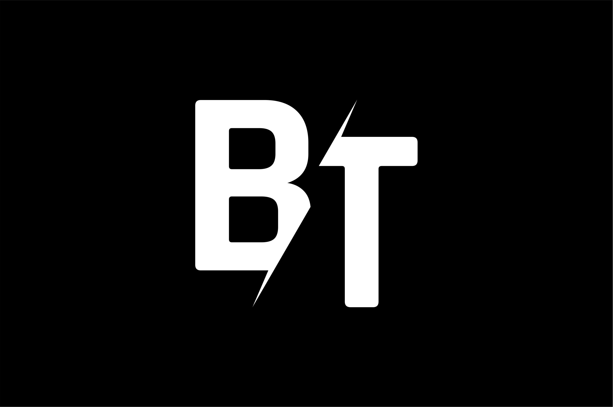
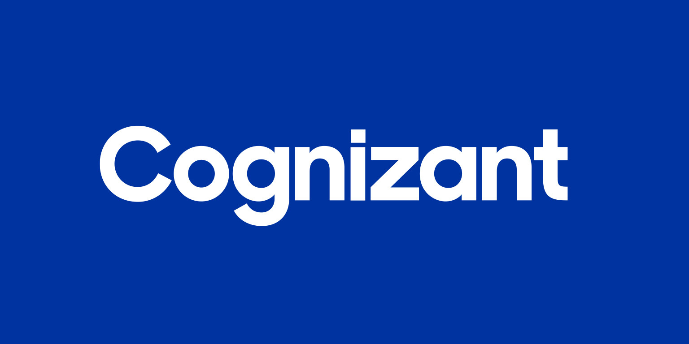
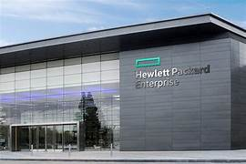
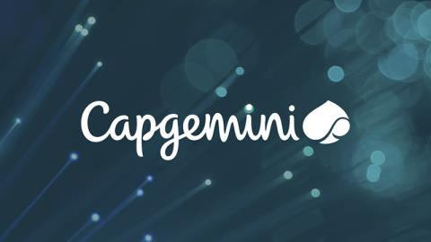

As of my last knowledge update in January 2023, BT Group plc, commonly known as BT, is a British multinational telecommunications company. Please note that there may have been changes or developments since then. As of my last update, here is a short description of BT:
BT is one of the largest telecommunications and IT services companies in the world, providing a wide range of communication services, including broadband, fixed-line, mobile, and television services. The company operates in various segments, including Consumer, Enterprise, Global, and Openreach. Openreach is responsible for managing the national broadband and telephone network infrastructure in the United Kingdom.
BT has a long history and has played a significant role in the development of telecommunications in the UK. The company has expanded its services globally, offering telecommunications solutions to businesses and consumers in multiple countries. In addition to traditional communication services, BT is involved in areas such as IT consulting, managed services, and network infrastructure.
Please check the latest sources for the most up-to-date information about BT, as the business landscape can change over time.

Cognizant is an American multinational technology company specializing in information technology services and consulting. Please note that there may have been changes or developments since then. As of my last update, here is a short description of Cognizant:
Cognizant is known for providing a wide range of IT services, including digital, technology, consulting, and operational services to clients in various industries. The company helps organizations navigate the digital landscape, implement technology solutions, and optimize business processes. Cognizant is often involved in areas such as application development, cloud computing, data analytics, cybersecurity, and enterprise consulting.
Headquartered in Teaneck, New Jersey, Cognizant operates globally, serving clients across different sectors, including healthcare, financial services, technology, and manufacturing. The company has a significant presence in outsourcing and business process services, helping clients enhance their competitiveness and adapt to evolving market trends.
For the latest and most accurate information about Cognizant, it's recommended to check the company's official website or recent news sources, as business details can change over time.
Tech Mahindra is an Indian multinational technology and IT services company. Please note that there may have been changes or developments since then. As of my last update, here is a short description of Tech Mahindra:
Tech Mahindra is part of the Mahindra Group and is headquartered in Pune, India. It is a leading provider of digital transformation, consulting, and business process outsourcing services. The company offers a broad spectrum of services, including IT solutions, software development, network services, business process outsourcing, and consulting across various industries.
With a global presence, Tech Mahindra serves clients in telecommunications, manufacturing, healthcare, banking, financial services, and other sectors. The company is known for its expertise in areas such as artificial intelligence, blockchain, cloud computing, cybersecurity, and the Internet of Things (IoT). Tech Mahindra collaborates with clients to help them adapt to digital advancements, streamline their operations, and achieve business goals through technology.
For the most up-to-date and accurate information about Tech Mahindra, it is recommended to check the company's official website or recent news sources. Business details can change, and staying informed is crucial for an accurate understanding of the company's current status and offerings.

HP Inc., commonly known as HP (Hewlett-Packard), is an American multinational information technology company. Please note that there may have been changes or developments since then. As of my last update, here is a short description of HP:
HP is a leading global provider of personal computing and other access devices, imaging and printing products, and related technologies, solutions, and services. The company is well-known for manufacturing a wide range of hardware components, including laptops, desktops, printers, and scanners, as well as software and solutions for businesses and consumers.
HP has a long history and has been a prominent player in the technology industry. The company's products and services are used by individuals, small and medium-sized businesses, and large enterprises around the world. HP's portfolio spans various segments, including Personal Systems, Printing, and 3D Printing, with a focus on innovation and sustainability.
For the most current and accurate information about HP, it is advisable to check the company's official website or recent news sources, as business details can evolve over time.

Wipro Limited is an Indian multinational corporation that provides information technology (IT), consulting, and business process services. Headquartered in Bangalore, India, Wipro is one of the largest IT service companies globally.
Wipro's services span various industries, including technology, healthcare, manufacturing, financial services, and more. The company offers a wide range of IT solutions, consulting services, and business process outsourcing to help clients adapt to technological advancements, improve operational efficiency, and achieve their business objectives.
Wipro has a global presence, with offices and delivery centers in numerous countries. The company is known for its focus on innovation, digital transformation, and sustainability initiatives. It operates through various business units, including Wipro IT Services, Wipro Digital, and Wipro Infrastructure Engineering, catering to the diverse needs of its clients.
For the latest and most accurate information about Wipro, it is recommended to check the company's official website or recent news sources, as business details can change over time.

Capgemini is a global consulting, technology services, and digital transformation company. Headquartered in Paris, France, Capgemini operates in various countries and is one of the largest IT consulting and services firms worldwide.
Capgemini provides a broad range of services, including consulting, technology solutions, outsourcing, and professional services across diverse industries such as finance, telecommunications, manufacturing, and government. The company is known for its expertise in areas such as digital transformation, cloud computing, cybersecurity, and emerging technologies.
With a focus on innovation and collaboration, Capgemini assists clients in navigating the complexities of the digital age, enhancing their business processes, and staying competitive in rapidly evolving markets. The company also emphasizes sustainability and social responsibility in its business practices.
For the most up-to-date and accurate information about Capgemini, it is recommended to check the company's official website or recent news sources, as business details can change over time.
STATISTICS
2000+
Recruiters hired
LPU students
1000+
Companies offering
CTC 5 Lacs p.a.
or above
350+
Recruiters of
IITs/IIMs/NITs also
hire from LPU
1.6 Lacs
Highest Internship
Stipend per month
Frequently Asked Questions
What is campus recuirement?
How can I register myself for a particular company's placement process?
What does it mean that I have been shortlisted by the company?
Can a student get more than one offer?
How do I communicate with a particular company?
Will the results be declared on the same day of the campus placements?
If I am awaiting results in one company, am I eligible to attend the drive of other company?